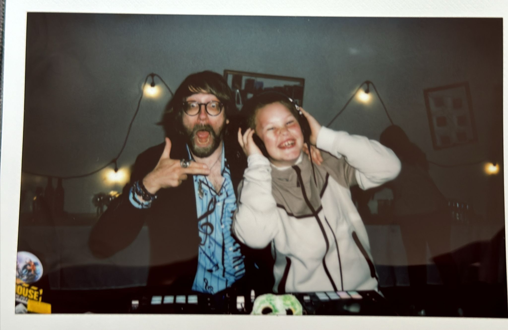

Žito

ŽITO není sekce. ŽITO je svět.
pro ty, co to mají poznat
Miloval jsem Virginii Woolfovou.
Ve snu si s ní slíbím, že svůj život udělám Oceánem též.
Potom spolu tančíme.
Něco se v nás HÝBE.
Můj jazyk vždycky drnčel, když četli beatničtí básníci.
Kdysi na Čé Té Dvojce se zamiloval do lásky.
Andy Kaufman for prezident, když nevyšel ten Čtvrtníček.
Tvary našich srdcí nikdy mi nepřestaly bušit na dveře.
Oceníte ve svým podniku poezii.
Pořádnej mrdanec jadrnosti a pravdy, ať už to je cokoli.
Pronášený s maniakální péčí posedlého herce.
Péčí o zvonky jakýchsi přístrojů.
Číchsi lidí.
Kdo je ten člověk na druhé straně?
William Seward Burroughs?
Tom Waits?
Jim Jarmusch?
Buřt Kombajn?
Tvoje mamka?
Chvíle, kdy lze čarovat s přáními a pozorností pro lásku, odpuštění a pochopení.
Ve světě, který se hroutí a narůstá mu nová páteř.
Lásko, kéž naše páteře tvrdnou novým potvrzením vnitřního DNA doby.
Nestal jsem se globální indie rock star.
Nejlepším režisérem Ameriky.
Ani americkým prezidentem
(českým mě tehdy nelákalo, tam bylo hezky postaráno.)
Namísto toho miluju každý live reality check
podivně polopřiznaně uměleckou formou.
TICHÉ SURVIVALIST KARAOKE
Máte píseň, která Vám někdy pomohla přežít? Já spoustu.
A když si ji přijdete zazpívat na verzi ŽI TO ULTIMATE,
pustíme Vám ji jen do sluchátek,
takže celý sál a všichni blízcí, které si dovedete,
budou slyšet Váš hlas zpívat naprosto bez filtru.
Vše, co potřebujeme pustit.
Vše, co potřebujeme slyšet.
Vše, co si dovolujeme prožít.
Nikoli navzdory.
Prožít jako modlitbu.
Za světlo. Radost. Odpuštění.
ŽITO –
něco mezi performancí, zpovědí a pozvánkou do průseru, který léčí.
Mír.
Skutečný.
Vevnitř.
Adios*